项目操作举例
此处就以一个简单的项目为例来说明，从头到尾是如何运行和操作的：
首次运行pyspider，会提示是否运行使用网络，点击允许
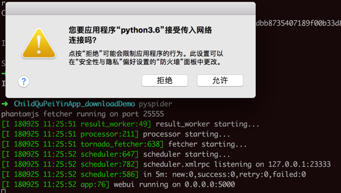
输出：
➜ ChildQuPeiYinApp_downloadDemo pyspider
phantomjs fetcher running on port 25555
[I 180925 11:25:51 result_worker:49] result_worker starting...
[I 180925 11:25:51 processor:211] processor starting...
[I 180925 11:25:51 tornado_fetcher:638] fetcher starting...
[I 180925 11:25:52 scheduler:647] scheduler starting...
[I 180925 11:25:52 scheduler:782] scheduler.xmlrpc listening on 127.0.0.1:23333
[I 180925 11:25:52 scheduler:586] in 5m: new:0,success:0,retry:0,failed:0
[I 180925 11:25:52 app:76] webui running on 0.0.0.0:5000
打开页面：
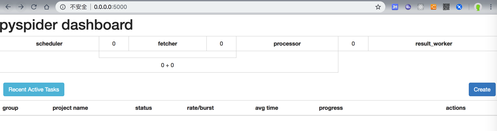
去Create New Project新建项目
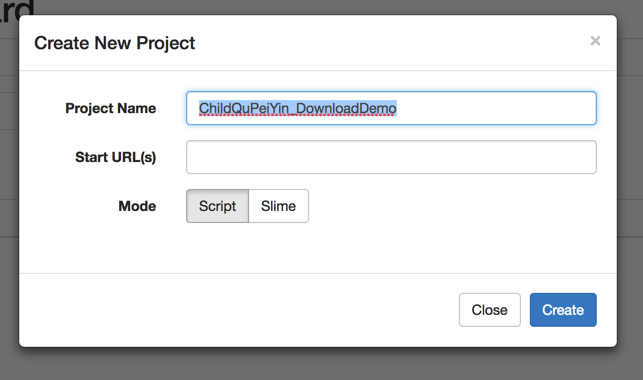
进入项目调试界面：
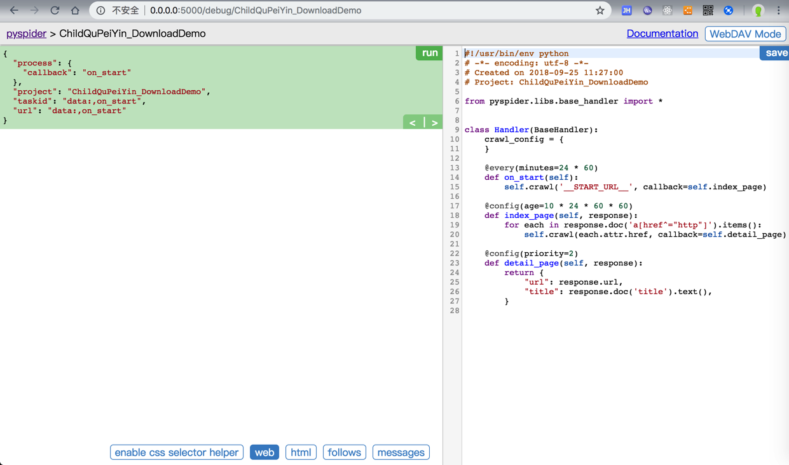
编写代码，或者已写好代码后去粘贴代码，再点击保存：
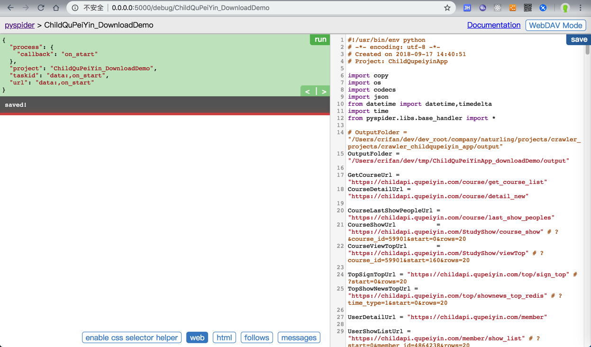
接着点击Run，开始运行。
会出现Follow，点击Follow
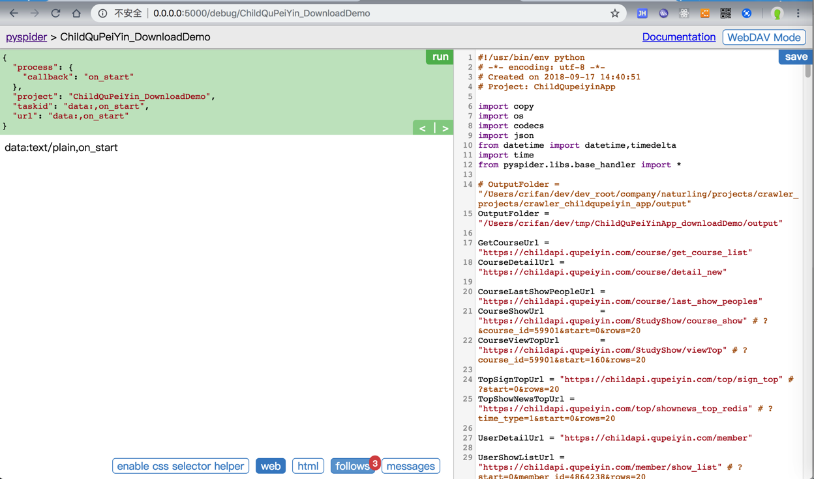
其中Follow后的3，指的是有产生了3条请求链接，可供后续继续访问
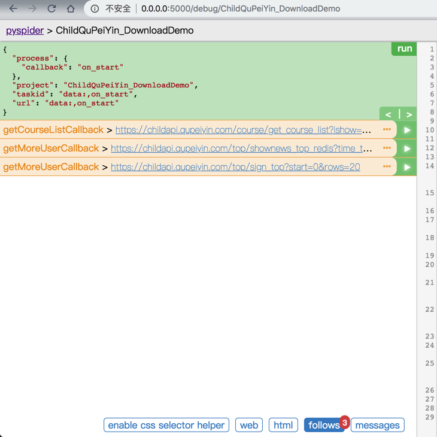
点击第一个的三个点，去展开：
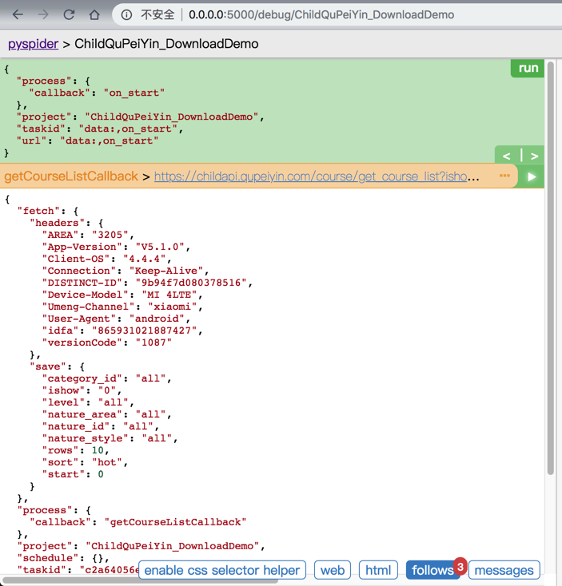
可以看到当前请求的详细参数
点击右箭头=>
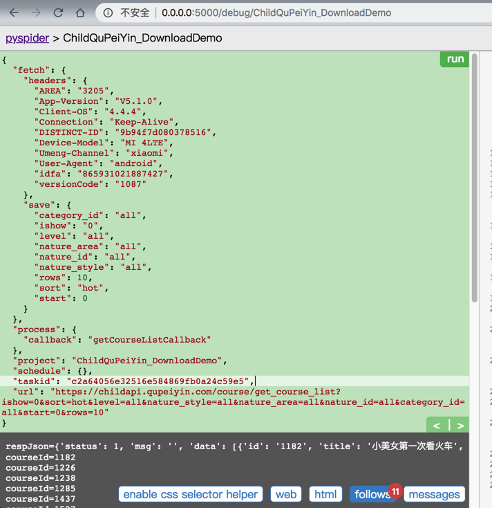
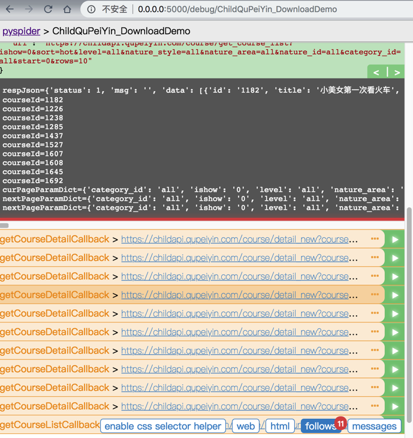
可以看到输出
然后再点击后续的链接，去运行：
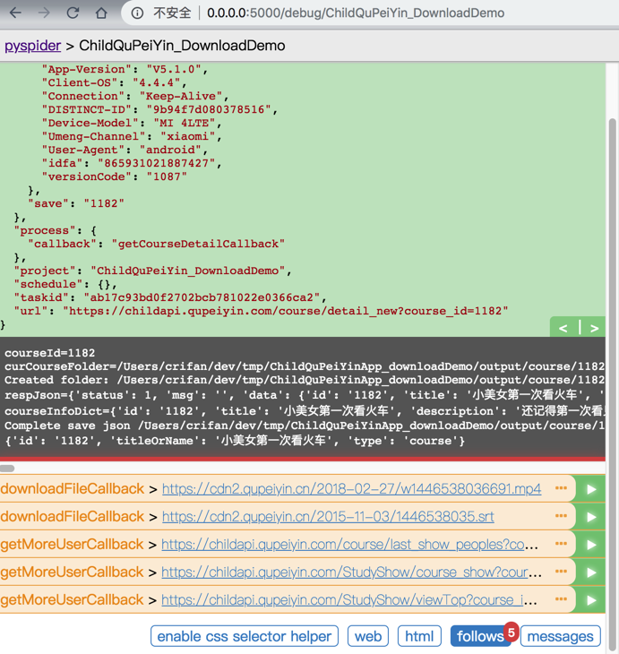
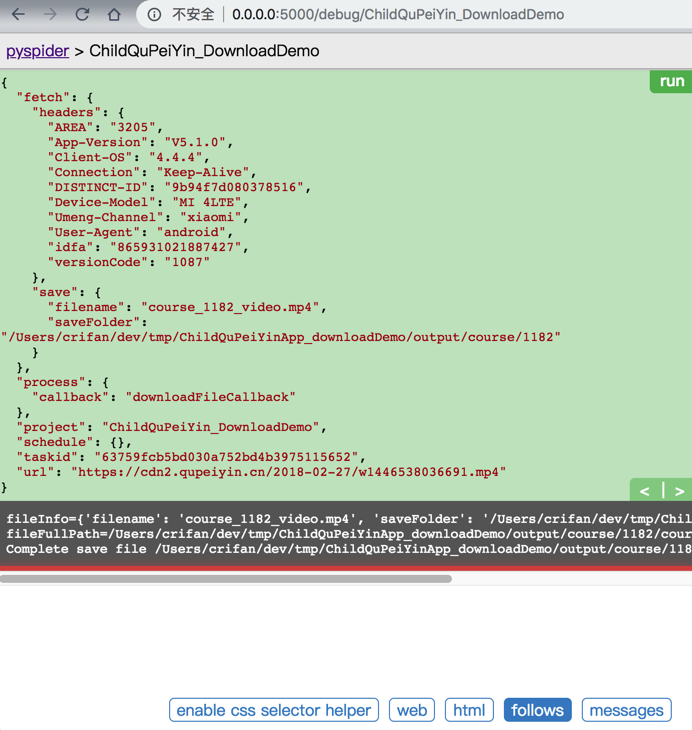
点击 左箭头=< 返回上一级：
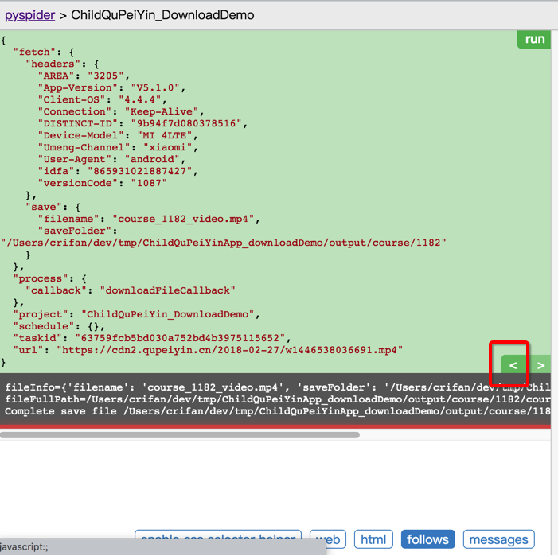
再点击Run
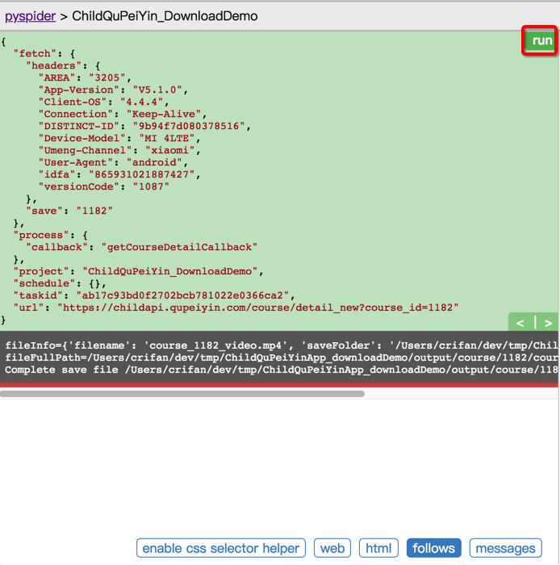
回到上一级的输出了：
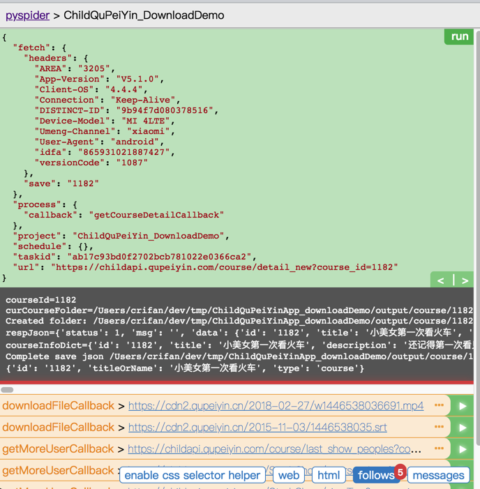
如此，即可，根据需要去，反复的：
- 点击某个请求的
Run，进入下一级 - 点击
<返回上一级
去调试，直到得到你需要的结果，即可完成。